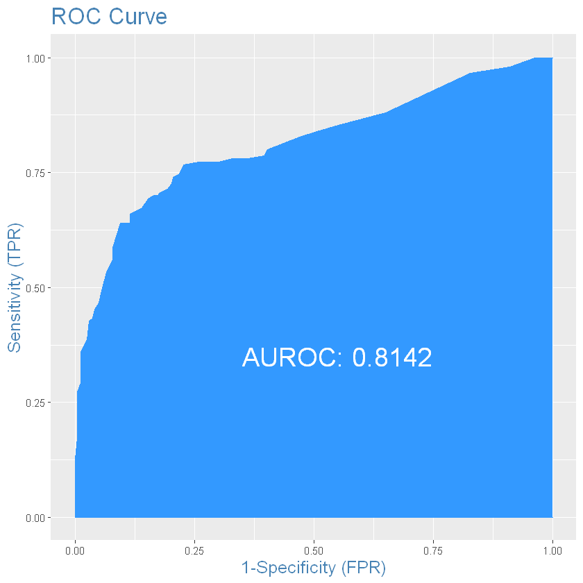

# install.packages("mice")
# install.packages("Amelia")
# install.packages("InformationValue")6 Логістична регресія. Класифікація. Титанік
Курс: “Математичне моделювання в R”
6.1 Dataset overview
У даному навчальному матеріалі використано класичний приклад даних з інформацією про пасажирів корабля Титанік.
Source: https://github.com/Geoyi/Cleaning-Titanic-Data
Dataset description:
You are provided hourly rental data spanning two years. For this competition, the training set is comprised of the first 19 days of each month, while the test set is the 20th to the end of the month. You must predict the total count of bikes rented during each hour covered by the test set, using only information available prior to the rental period.
Data Fields:
| Variable | Definition | Key |
|---|---|---|
| survival | Survival (TARGET) | 0 = No, 1 = Yes |
| pclass | Ticket class | 1 = 1st, 2 = 2nd, 3 = 3rd |
| sex | Sex | |
| Age | Age in years | |
| sibsp | # of siblings / spouses aboard the Titanic | |
| parch | # of parents / children aboard the Titanic | |
| ticket | Ticket number | |
| fare | Passenger fare | |
| cabin | Cabin number | |
| embarked | Port of Embarkation | C = Cherbourg, Q = Queenstown, S = Southampton |
# read local
titanic_data <- read.csv("https://raw.githubusercontent.com/Geoyi/Cleaning-Titanic-Data/master/titanic_original.csv", na.strings = c("")) # empty strings is missing data and wiil be replaced with NA
head(titanic_data)| pclass | survived | name | sex | age | sibsp | parch | ticket | fare | cabin | embarked | boat | body | home.dest | |
|---|---|---|---|---|---|---|---|---|---|---|---|---|---|---|
| <int> | <int> | <chr> | <chr> | <dbl> | <int> | <int> | <chr> | <dbl> | <chr> | <chr> | <chr> | <int> | <chr> | |
| 1 | 1 | 1 | Allen, Miss. Elisabeth Walton | female | 29.0000 | 0 | 0 | 24160 | 211.3375 | B5 | S | 2 | NA | St Louis, MO |
| 2 | 1 | 1 | Allison, Master. Hudson Trevor | male | 0.9167 | 1 | 2 | 113781 | 151.5500 | C22 C26 | S | 11 | NA | Montreal, PQ / Chesterville, ON |
| 3 | 1 | 0 | Allison, Miss. Helen Loraine | female | 2.0000 | 1 | 2 | 113781 | 151.5500 | C22 C26 | S | NA | NA | Montreal, PQ / Chesterville, ON |
| 4 | 1 | 0 | Allison, Mr. Hudson Joshua Creighton | male | 30.0000 | 1 | 2 | 113781 | 151.5500 | C22 C26 | S | NA | 135 | Montreal, PQ / Chesterville, ON |
| 5 | 1 | 0 | Allison, Mrs. Hudson J C (Bessie Waldo Daniels) | female | 25.0000 | 1 | 2 | 113781 | 151.5500 | C22 C26 | S | NA | NA | Montreal, PQ / Chesterville, ON |
| 6 | 1 | 1 | Anderson, Mr. Harry | male | 48.0000 | 0 | 0 | 19952 | 26.5500 | E12 | S | 3 | NA | New York, NY |
Переглянемо структуру даних:
str(titanic_data)'data.frame': 1310 obs. of 14 variables:
$ pclass : int 1 1 1 1 1 1 1 1 1 1 ...
$ survived : int 1 1 0 0 0 1 1 0 1 0 ...
$ name : chr "Allen, Miss. Elisabeth Walton" "Allison, Master. Hudson Trevor" "Allison, Miss. Helen Loraine" "Allison, Mr. Hudson Joshua Creighton" ...
$ sex : chr "female" "male" "female" "male" ...
$ age : num 29 0.917 2 30 25 ...
$ sibsp : int 0 1 1 1 1 0 1 0 2 0 ...
$ parch : int 0 2 2 2 2 0 0 0 0 0 ...
$ ticket : chr "24160" "113781" "113781" "113781" ...
$ fare : num 211 152 152 152 152 ...
$ cabin : chr "B5" "C22 C26" "C22 C26" "C22 C26" ...
$ embarked : chr "S" "S" "S" "S" ...
$ boat : chr "2" "11" NA NA ...
$ body : int NA NA NA 135 NA NA NA NA NA 22 ...
$ home.dest: chr "St Louis, MO" "Montreal, PQ / Chesterville, ON" "Montreal, PQ / Chesterville, ON" "Montreal, PQ / Chesterville, ON" ...Значення показників вибірки:
- survival – “клас виживання” (0 = No; 1 = Yes)
- pclass – клас пасажирів (1 = 1st; 2 = 2nd; 3 = 3rd)
name– ім’я- sex - стать
- age - вік
- sibsp – кількість членів сім’ї на борту (братів, сестер, подружжя)
- parch – кількість дітей або батьків на борту
ticket– номер квитка- fare – вартість
- cabin – номер(и)
- embarked – порт посадки на судно (C = Cherbourg; Q = Queenstown; S = Southampton)
boat– борт на якому відпливав під час порятунку (якщо врятований)body– ідентифікаційни номер тілаhome.dest– місце доставки пасажира
Детальніше: http://campus.lakeforest.edu/frank/FILES/MLFfiles/Bio150/Titanic/TitanicMETA.pdf.
Закреслені поля надалі будуть видалені з датасету для моделювання.
6.2 Data preprocessing
6.2.1 Remove unused columns
Lets remove columns: - [x] name - just string - [x] ticket - it can be useful to analyze numbers and check if - [x] boat - if boat is not missing - survived, we cannot use it - [x] body - if body is not missing - not survived, cant use it - [x] home.dest - just text
suppressMessages(library(dplyr)) # filter()
titanic_data <- titanic_data |>
select(-c("name", "ticket", "boat", "body", "home.dest"))
head(titanic_data)| pclass | survived | sex | age | sibsp | parch | fare | cabin | embarked | |
|---|---|---|---|---|---|---|---|---|---|
| <int> | <int> | <chr> | <dbl> | <int> | <int> | <dbl> | <chr> | <chr> | |
| 1 | 1 | 1 | female | 29.0000 | 0 | 0 | 211.3375 | B5 | S |
| 2 | 1 | 1 | male | 0.9167 | 1 | 2 | 151.5500 | C22 C26 | S |
| 3 | 1 | 0 | female | 2.0000 | 1 | 2 | 151.5500 | C22 C26 | S |
| 4 | 1 | 0 | male | 30.0000 | 1 | 2 | 151.5500 | C22 C26 | S |
| 5 | 1 | 0 | female | 25.0000 | 1 | 2 | 151.5500 | C22 C26 | S |
| 6 | 1 | 1 | male | 48.0000 | 0 | 0 | 26.5500 | E12 | S |
summary(titanic_data) pclass survived sex age
Min. :1.000 Min. :0.000 Length:1310 Min. : 0.1667
1st Qu.:2.000 1st Qu.:0.000 Class :character 1st Qu.:21.0000
Median :3.000 Median :0.000 Mode :character Median :28.0000
Mean :2.295 Mean :0.382 Mean :29.8811
3rd Qu.:3.000 3rd Qu.:1.000 3rd Qu.:39.0000
Max. :3.000 Max. :1.000 Max. :80.0000
NA's :1 NA's :1 NA's :264
sibsp parch fare cabin
Min. :0.0000 Min. :0.000 Min. : 0.000 Length:1310
1st Qu.:0.0000 1st Qu.:0.000 1st Qu.: 7.896 Class :character
Median :0.0000 Median :0.000 Median : 14.454 Mode :character
Mean :0.4989 Mean :0.385 Mean : 33.295
3rd Qu.:1.0000 3rd Qu.:0.000 3rd Qu.: 31.275
Max. :8.0000 Max. :9.000 Max. :512.329
NA's :1 NA's :1 NA's :2
embarked
Length:1310
Class :character
Mode :character
6.2.2 Check missing data
Для оцінки кількості пропусків побудуємо матрицю та мапу:
suppressMessages(library(mice))
md.pattern(titanic_data)
Attaching package: 'mice'
The following object is masked from 'package:stats':
filter
The following objects are masked from 'package:base':
cbind, rbind
| pclass | survived | sex | sibsp | parch | fare | embarked | age | cabin | ||
|---|---|---|---|---|---|---|---|---|---|---|
| 270 | 1 | 1 | 1 | 1 | 1 | 1 | 1 | 1 | 1 | 0 |
| 773 | 1 | 1 | 1 | 1 | 1 | 1 | 1 | 1 | 0 | 1 |
| 23 | 1 | 1 | 1 | 1 | 1 | 1 | 1 | 0 | 1 | 1 |
| 240 | 1 | 1 | 1 | 1 | 1 | 1 | 1 | 0 | 0 | 2 |
| 2 | 1 | 1 | 1 | 1 | 1 | 1 | 0 | 1 | 1 | 1 |
| 1 | 1 | 1 | 1 | 1 | 1 | 0 | 1 | 1 | 0 | 2 |
| 1 | 0 | 0 | 0 | 0 | 0 | 0 | 0 | 0 | 0 | 9 |
| 1 | 1 | 1 | 1 | 1 | 2 | 3 | 264 | 1015 | 1289 |

suppressMessages(library(Amelia))
missmap(titanic_data, main = 'Missing data map', col = c('yellow', 'black'), legend = FALSE)Loading required package: Rcpp
##
## Amelia II: Multiple Imputation
## (Version 1.8.0, built: 2021-05-26)
## Copyright (C) 2005-2022 James Honaker, Gary King and Matthew Blackwell
## Refer to http://gking.harvard.edu/amelia/ for more information
##

One more way to check where missing data is present with saplly():
sapply(titanic_data, function(x) sum(is.na(x)))- pclass
- 1
- survived
- 1
- sex
- 1
- age
- 264
- sibsp
- 1
- parch
- 1
- fare
- 2
- cabin
- 1015
- embarked
- 3
# Lets check where survived is NA, target should be finite
titanic_data %>% filter(is.na(survived))
# looks like its wrong line in data| pclass | survived | sex | age | sibsp | parch | fare | cabin | embarked |
|---|---|---|---|---|---|---|---|---|
| <int> | <int> | <chr> | <dbl> | <int> | <int> | <dbl> | <chr> | <chr> |
| NA | NA | NA | NA | NA | NA | NA | NA | NA |
# lets remove this row
titanic_data <- titanic_data %>% filter(!is.na(survived))
sapply(titanic_data, function(x) sum(is.na(x)))- pclass
- 0
- survived
- 0
- sex
- 0
- age
- 263
- sibsp
- 0
- parch
- 0
- fare
- 1
- cabin
- 1014
- embarked
- 2
We will replace all missing data on the next stages for:
fare, cabin, age, embarked.
6.2.3 Visual analysis
library(ggplot2) # for plots
library(gmodels) # for CrossTableSurvived
CrossTable(titanic_data$survived)
ggplot(titanic_data, aes(survived)) + geom_bar(aes(fill = factor(survived))) + theme_bw()
Cell Contents
|-------------------------|
| N |
| N / Table Total |
|-------------------------|
Total Observations in Table: 1309
| 0 | 1 |
|-----------|-----------|
| 809 | 500 |
| 0.618 | 0.382 |
|-----------|-----------|
Крос-таблиця survived vs pclass
CrossTable(titanic_data$survived, titanic_data$pclass)
ggplot(titanic_data, aes(pclass)) + geom_bar(aes(fill = factor(pclass)))+ theme_bw()
Cell Contents
|-------------------------|
| N |
| Chi-square contribution |
| N / Row Total |
| N / Col Total |
| N / Table Total |
|-------------------------|
Total Observations in Table: 1309
| titanic_data$pclass
titanic_data$survived | 1 | 2 | 3 | Row Total |
----------------------|-----------|-----------|-----------|-----------|
0 | 123 | 158 | 528 | 809 |
| 29.411 | 1.017 | 18.411 | |
| 0.152 | 0.195 | 0.653 | 0.618 |
| 0.381 | 0.570 | 0.745 | |
| 0.094 | 0.121 | 0.403 | |
----------------------|-----------|-----------|-----------|-----------|
1 | 200 | 119 | 181 | 500 |
| 47.587 | 1.645 | 29.788 | |
| 0.400 | 0.238 | 0.362 | 0.382 |
| 0.619 | 0.430 | 0.255 | |
| 0.153 | 0.091 | 0.138 | |
----------------------|-----------|-----------|-----------|-----------|
Column Total | 323 | 277 | 709 | 1309 |
| 0.247 | 0.212 | 0.542 | |
----------------------|-----------|-----------|-----------|-----------|
sex
ggplot(titanic_data, aes(x = sex)) + geom_bar(aes(fill = factor(sex))) + theme_bw()Age*
ggplot(titanic_data, aes(age)) + geom_histogram(bins = 25, alpha = 0.5, fill = 'blue', color='black') + theme_bw()Warning message:
"Removed 263 rows containing non-finite values (stat_bin)."fare
ggplot(titanic_data, aes(fare)) + geom_histogram(bins = 15, alpha = 0.5, fill = 'blue', color='black')+ theme_bw()Warning message:
"Removed 1 rows containing non-finite values (stat_bin)."sibsp
ggplot(titanic_data, aes(sibsp)) + geom_bar()+ theme_bw()parch
ggplot(titanic_data, aes(parch)) + geom_bar()+ theme_bw()ggplot(titanic_data, aes(embarked)) + geom_bar(aes(fill = factor(embarked)))+ theme_bw()
# it looks like S the most popular value in embarked, so it could be good idea to replace 1 missing with S6.3 Splitting data
Lest split out dataset for test and train
set.seed(1) # seed
library(caTools)
split <- sample.split(titanic_data$survived, SplitRatio = 0.7)
titanic_train <- subset(titanic_data, split == TRUE)
titanic_test <- subset(titanic_data, split == FALSE)
library(gmodels)
CrossTable(titanic_train$survived)
CrossTable(titanic_test$survived) # its splitted by the same proportions
Cell Contents
|-------------------------|
| N |
| N / Table Total |
|-------------------------|
Total Observations in Table: 916
| 0 | 1 |
|-----------|-----------|
| 566 | 350 |
| 0.618 | 0.382 |
|-----------|-----------|
Cell Contents
|-------------------------|
| N |
| N / Table Total |
|-------------------------|
Total Observations in Table: 393
| 0 | 1 |
|-----------|-----------|
| 243 | 150 |
| 0.618 | 0.382 |
|-----------|-----------|
6.4 Missing replacement
Missing data replacement should have base points for each parameter.
So, we will fix data for replacement from train and implement it to both train and test.
head(titanic_train)| pclass | survived | sex | age | sibsp | parch | fare | cabin | embarked | |
|---|---|---|---|---|---|---|---|---|---|
| <int> | <int> | <chr> | <dbl> | <int> | <int> | <dbl> | <chr> | <chr> | |
| 1 | 1 | 1 | female | 29.0000 | 0 | 0 | 211.3375 | B5 | S |
| 2 | 1 | 1 | male | 0.9167 | 1 | 2 | 151.5500 | C22 C26 | S |
| 3 | 1 | 0 | female | 2.0000 | 1 | 2 | 151.5500 | C22 C26 | S |
| 4 | 1 | 0 | male | 30.0000 | 1 | 2 | 151.5500 | C22 C26 | S |
| 5 | 1 | 0 | female | 25.0000 | 1 | 2 | 151.5500 | C22 C26 | S |
| 6 | 1 | 1 | male | 48.0000 | 0 | 0 | 26.5500 | E12 | S |
# check missing
sapply(titanic_train, function(x) sum(is.na(x)))
sapply(titanic_test, function(x) sum(is.na(x)))- pclass
- 0
- survived
- 0
- sex
- 0
- age
- 182
- sibsp
- 0
- parch
- 0
- fare
- 1
- cabin
- 703
- embarked
- 1
- pclass
- 0
- survived
- 0
- sex
- 0
- age
- 81
- sibsp
- 0
- parch
- 0
- fare
- 0
- cabin
- 311
- embarked
- 1
Створюємо dummy-змінну, що буде вказути на наявність запису про каюту у пасажира 1/0:
# train
titanic_train <- titanic_train %>%
mutate(hascabin = ifelse(!is.na(cabin), 1, 0)) %>%
select(-cabin) # remove cabin column
titanic_test <- titanic_test %>%
mutate(hascabin = ifelse(!is.na(cabin), 1, 0)) %>%
select(-cabin) # remove cabin columnЗаповнюємо дані пропусків вартості квитка fare. Замінюємо NA на середнє значення вартості квитка:
avg_fare <- round(mean(titanic_data$fare, na.rm = TRUE),4)
avg_fare
# lets study new function from tidyr replace NA
library(tidyr)
titanic_train <- titanic_train %>%
mutate(fare = replace_na(fare, avg_fare))
# there are no missing in test$fare
any(is.na(titanic_train$fare)) # check for missing
any(is.na(titanic_test$fare))
33.2955
FALSE
FALSE
Заповнюємо пропуски для порту посадки (embarked). Варіантом для заміни оберемо найпопулярнішйи варінт значення, той який зустрічається частіше за інші. Скористаємося показником МОДА. З попереднього аналізу відомо, що таким показником є S. Проте варто написати універсальну функцію, що буде сама відбирати значення:
getmode <- function(v) {
uniqv <- unique(v) # select all unique values
uniqv[which.max(tabulate(match(v, uniqv)))] # select value that included most times
}# get the moda
embarked_moda <- getmode(titanic_data$embarked)
embarked_moda # its `S`
'S'
titanic_train <- titanic_train %>%
mutate(embarked = replace_na(embarked, embarked_moda))
titanic_test <- titanic_test %>%
mutate(embarked = replace_na(embarked, embarked_moda))
any(is.na(titanic_train$embarked)) # check for missing
any(is.na(titanic_test$embarked))
FALSE
FALSE
Для заміни пропусків по віку (age) використаємо показник “Клас пасажира” (pclass). Обчислимо середній вік пасажирів кожного класу і замінимо пропуски з урахуванням цієї інформації. Тобто для усіх пасажирів 1-го класу замінимо пропуски середнім по пасажирах середнього класу і т.д.
# lets build boxplot for average age in each class
age_plot <- ggplot(titanic_train, aes(pclass, age))
age_plot <- age_plot + geom_boxplot(aes(group = pclass, fill = factor(pclass), alpha = 0.4)) # alpha == opacity of chart elements
age_plot <- age_plot + scale_y_continuous(breaks = seq(min(0), max(80), by = 2)) + theme_bw()
age_plotWarning message:
"Removed 182 rows containing non-finite values (stat_boxplot)."Середні значення віку для кожного класу пасажирів становлять:
pclass_ages <- titanic_train %>%
group_by(pclass) %>%
summarise(mean_age = floor(mean(age, na.rm =T)))
pclass_ages| pclass | mean_age |
|---|---|
| <int> | <dbl> |
| 1 | 38 |
| 2 | 29 |
| 3 | 24 |
titanic_train <- titanic_train %>%
mutate(age = ifelse(is.na(age), pclass_ages$mean_age[pclass], age))
any(is.na(titanic_train$age)) # check for missing
head(titanic_train)
FALSE
| pclass | survived | sex | age | sibsp | parch | fare | embarked | hascabin | |
|---|---|---|---|---|---|---|---|---|---|
| <int> | <int> | <chr> | <dbl> | <int> | <int> | <dbl> | <chr> | <dbl> | |
| 1 | 1 | 1 | female | 29.0000 | 0 | 0 | 211.3375 | S | 1 |
| 2 | 1 | 1 | male | 0.9167 | 1 | 2 | 151.5500 | S | 1 |
| 3 | 1 | 0 | female | 2.0000 | 1 | 2 | 151.5500 | S | 1 |
| 4 | 1 | 0 | male | 30.0000 | 1 | 2 | 151.5500 | S | 1 |
| 5 | 1 | 0 | female | 25.0000 | 1 | 2 | 151.5500 | S | 1 |
| 6 | 1 | 1 | male | 48.0000 | 0 | 0 | 26.5500 | S | 1 |
titanic_test <- titanic_test %>%
mutate(age = ifelse(is.na(age), pclass_ages$mean_age[pclass], age))
any(is.na(titanic_test$age)) # check for missing
FALSE
md.pattern(titanic_train) # OK, no missing /\ /\
{ `---' }
{ O O }
==> V <== No need for mice. This data set is completely observed.
\ \|/ /
`-----'
| pclass | survived | sex | age | sibsp | parch | fare | embarked | hascabin | ||
|---|---|---|---|---|---|---|---|---|---|---|
| 916 | 1 | 1 | 1 | 1 | 1 | 1 | 1 | 1 | 1 | 0 |
| 0 | 0 | 0 | 0 | 0 | 0 | 0 | 0 | 0 | 0 |
md.pattern(titanic_test) # OK, no missing /\ /\
{ `---' }
{ O O }
==> V <== No need for mice. This data set is completely observed.
\ \|/ /
`-----'
| pclass | survived | sex | age | sibsp | parch | fare | embarked | hascabin | ||
|---|---|---|---|---|---|---|---|---|---|---|
| 393 | 1 | 1 | 1 | 1 | 1 | 1 | 1 | 1 | 1 | 0 |
| 0 | 0 | 0 | 0 | 0 | 0 | 0 | 0 | 0 | 0 |
7 Model building
Перед побудовою моделі визначимо категоріальні змінні як фактори (factor), щоб під час моделювання для них було сформовано dummy-змінні.
head(titanic_train)| pclass | survived | sex | age | sibsp | parch | fare | embarked | hascabin | |
|---|---|---|---|---|---|---|---|---|---|
| <int> | <int> | <chr> | <dbl> | <int> | <int> | <dbl> | <chr> | <dbl> | |
| 1 | 1 | 1 | female | 29.0000 | 0 | 0 | 211.3375 | S | 1 |
| 2 | 1 | 1 | male | 0.9167 | 1 | 2 | 151.5500 | S | 1 |
| 3 | 1 | 0 | female | 2.0000 | 1 | 2 | 151.5500 | S | 1 |
| 4 | 1 | 0 | male | 30.0000 | 1 | 2 | 151.5500 | S | 1 |
| 5 | 1 | 0 | female | 25.0000 | 1 | 2 | 151.5500 | S | 1 |
| 6 | 1 | 1 | male | 48.0000 | 0 | 0 | 26.5500 | S | 1 |
# for train
titanic_train$pclass <- factor(titanic_train$pclass, levels = c(1,2,3))
titanic_train$survived <- factor(titanic_train$survived, levels = c(0, 1))
titanic_train$hascabin<- factor(titanic_train$hascabin, levels = c(0, 1))
titanic_train$embarked <- factor(titanic_train$embarked, levels = c('S', 'C', 'Q'))
titanic_train$sex <- factor(titanic_train$sex, levels = c('female', 'male'))
head(titanic_train)| pclass | survived | sex | age | sibsp | parch | fare | embarked | hascabin | |
|---|---|---|---|---|---|---|---|---|---|
| <fct> | <fct> | <fct> | <dbl> | <int> | <int> | <dbl> | <fct> | <fct> | |
| 1 | 1 | 1 | female | 29.0000 | 0 | 0 | 211.3375 | S | 1 |
| 2 | 1 | 1 | male | 0.9167 | 1 | 2 | 151.5500 | S | 1 |
| 3 | 1 | 0 | female | 2.0000 | 1 | 2 | 151.5500 | S | 1 |
| 4 | 1 | 0 | male | 30.0000 | 1 | 2 | 151.5500 | S | 1 |
| 5 | 1 | 0 | female | 25.0000 | 1 | 2 | 151.5500 | S | 1 |
| 6 | 1 | 1 | male | 48.0000 | 0 | 0 | 26.5500 | S | 1 |
# use the same levels for factors in test_set
# different ordering data in
titanic_test$pclass <- factor(titanic_test$pclass, levels = c(1,2,3))
titanic_test$survived <- factor(titanic_test$survived, levels = c(0, 1))
titanic_test$hascabin<- factor(titanic_test$hascabin, levels = c(0, 1))
titanic_test$embarked <- factor(titanic_test$embarked, levels = c('S', 'C', 'Q'))
titanic_test$sex <- factor(titanic_test$sex, levels = c('female', 'male'))
head(titanic_test)| pclass | survived | sex | age | sibsp | parch | fare | embarked | hascabin | |
|---|---|---|---|---|---|---|---|---|---|
| <fct> | <fct> | <fct> | <dbl> | <int> | <int> | <dbl> | <fct> | <fct> | |
| 7 | 1 | 1 | female | 63 | 1 | 0 | 77.9583 | S | 1 |
| 11 | 1 | 0 | male | 47 | 1 | 0 | 227.5250 | C | 1 |
| 12 | 1 | 1 | female | 18 | 1 | 0 | 227.5250 | C | 1 |
| 13 | 1 | 1 | female | 24 | 0 | 0 | 69.3000 | C | 1 |
| 17 | 1 | 0 | male | 24 | 0 | 1 | 247.5208 | C | 1 |
| 20 | 1 | 0 | male | 36 | 0 | 0 | 75.2417 | C | 1 |
Для побудови логістичної регресії використовується функція glm(). Формула survived ~ . означає, що у модель будуть відібрані усі параметри із вибірки, а survived буде використано як вихідну змінну. family = binomial(link = "logit") вказує на використання логістиної регресії.
def_glm <- glm(formula = survived ~ ., family = binomial(link = "logit"), data = titanic_train)
summary(def_glm)
Call:
glm(formula = survived ~ ., family = binomial(link = "logit"),
data = titanic_train)
Deviance Residuals:
Min 1Q Median 3Q Max
-2.5558 -0.6169 -0.4128 0.5801 2.6250
Coefficients:
Estimate Std. Error z value Pr(>|z|)
(Intercept) 2.748e+00 5.167e-01 5.318 1.05e-07 ***
pclass2 -2.653e-01 3.772e-01 -0.703 0.481831
pclass3 -1.397e+00 3.907e-01 -3.574 0.000351 ***
sexmale -2.753e+00 1.999e-01 -13.771 < 2e-16 ***
age -3.423e-02 7.987e-03 -4.285 1.83e-05 ***
sibsp -3.144e-01 1.111e-01 -2.829 0.004672 **
parch -7.658e-02 1.196e-01 -0.640 0.521911
fare 4.771e-05 2.313e-03 0.021 0.983541
embarkedC 6.002e-01 2.336e-01 2.569 0.010193 *
embarkedQ -1.329e-01 3.185e-01 -0.417 0.676547
hascabin1 1.008e+00 3.247e-01 3.104 0.001912 **
---
Signif. codes: 0 '***' 0.001 '**' 0.01 '*' 0.05 '.' 0.1 ' ' 1
(Dispersion parameter for binomial family taken to be 1)
Null deviance: 1218.4 on 915 degrees of freedom
Residual deviance: 805.4 on 905 degrees of freedom
AIC: 827.4
Number of Fisher Scoring iterations: 5Параметри з _***_ вказують на значимість показника у моделі. Здійснимо прогноз по тренувальній вибірці:
And test build model with an other package caret explained before in train/test/validation splitting paragraph.
# install.packages("e1071")#library(e1071) # required by caret
suppressMessages(library(caret))
# this is wrapper function for training different models
caret_glm = train(survived ~ ., # formula
data = titanic_train, # data for model training
method = 'glm', # model building algorithm, glm
family = "binomial",
) # data preprocessing techniques, normalization and scaling
summary(caret_glm)Loading required package: lattice
Call:
NULL
Deviance Residuals:
Min 1Q Median 3Q Max
-2.5558 -0.6169 -0.4128 0.5801 2.6250
Coefficients:
Estimate Std. Error z value Pr(>|z|)
(Intercept) 2.748e+00 5.167e-01 5.318 1.05e-07 ***
pclass2 -2.653e-01 3.772e-01 -0.703 0.481831
pclass3 -1.397e+00 3.907e-01 -3.574 0.000351 ***
sexmale -2.753e+00 1.999e-01 -13.771 < 2e-16 ***
age -3.423e-02 7.987e-03 -4.285 1.83e-05 ***
sibsp -3.144e-01 1.111e-01 -2.829 0.004672 **
parch -7.658e-02 1.196e-01 -0.640 0.521911
fare 4.771e-05 2.313e-03 0.021 0.983541
embarkedC 6.002e-01 2.336e-01 2.569 0.010193 *
embarkedQ -1.329e-01 3.185e-01 -0.417 0.676547
hascabin1 1.008e+00 3.247e-01 3.104 0.001912 **
---
Signif. codes: 0 '***' 0.001 '**' 0.01 '*' 0.05 '.' 0.1 ' ' 1
(Dispersion parameter for binomial family taken to be 1)
Null deviance: 1218.4 on 915 degrees of freedom
Residual deviance: 805.4 on 905 degrees of freedom
AIC: 827.4
Number of Fisher Scoring iterations: 5You can see that we got the same variables significansy in both models, but coefficients are different. Lets check what model building algorithm is better.
To compare our modeling resutls for train lets create special data frames:
train_check <- titanic_train %>%
select(survived) %>%
mutate(predicted_def = predict(def_glm, type = 'response', newdata = titanic_train), # predicted by default glm function
predicted_caret = predict(caret_glm, type = 'prob', newdata = titanic_train)[, 2]) # predicted by caret train algorithm
head(train_check)| survived | predicted_def | predicted_caret | |
|---|---|---|---|
| <fct> | <dbl> | <dbl> | |
| 1 | 1 | 0.9412193 | 0.9412193 |
| 2 | 1 | 0.6250488 | 0.6250488 |
| 3 | 0 | 0.9618407 | 0.9618407 |
| 4 | 0 | 0.3812235 | 0.3812235 |
| 5 | 0 | 0.9198190 | 0.9198190 |
| 6 | 1 | 0.3455040 | 0.3455040 |
As you see for logistic regression results are the same, so we can use default algorithm. But train() method is very powerfull with desicion trees, boosting, random forest, neural network and other complex algorithms.
7.1 Model accuracy check
Lets create new datasets for train and test results storing. We will use them
train_results <- titanic_train %>%
select(survived) %>%
mutate(predicted = predict(def_glm, type = 'response', newdata = titanic_train),
residuals = residuals(def_glm, type = "response"))
test_results <- titanic_test %>%
select(survived) %>%
mutate(predicted = predict(def_glm, type = 'response', newdata = titanic_test))
head(test_results)| survived | predicted | |
|---|---|---|
| <fct> | <dbl> | |
| 7 | 1 | 0.7839711 |
| 11 | 0 | 0.4233024 |
| 12 | 1 | 0.9688239 |
| 13 | 1 | 0.9717471 |
| 17 | 0 | 0.6718810 |
| 20 | 0 | 0.5925107 |
The next stage is converting out predicted probabilities into event classes 1/0. By default you can do this using next condition predicted == 1 if prob >= 0.5 and 0 if prob < 0.5.
In this case 0.5 is cut-off line or classification splitter. So, lets do this for both train and test.
train_results <- train_results %>%
mutate(survived_05 = as.factor(ifelse(predicted >= 0.5, 1 , 0)))
test_results <- test_results %>%
mutate(survived_05 = as.factor(ifelse(predicted >= 0.5, 1 , 0)))
head(test_results)| survived | predicted | survived_05 | |
|---|---|---|---|
| <fct> | <dbl> | <fct> | |
| 7 | 1 | 0.7839711 | 1 |
| 11 | 0 | 0.4233024 | 0 |
| 12 | 1 | 0.9688239 | 1 |
| 13 | 1 | 0.9717471 | 1 |
| 17 | 0 | 0.6718810 | 1 |
| 20 | 0 | 0.5925107 | 1 |
Для демонстрації переглянемо графік реальних та прогнозованих/модельованих значень survived.
plot_train_data <- train_results[0:80,]
ggplot(plot_train_data, aes(x = c(1:nrow(plot_train_data)), y = as.numeric(survived)-1)) +
geom_segment(aes(xend = c(1:nrow(plot_train_data)), yend = predicted), alpha = .2) +
geom_point(aes(color = residuals), size = 2) +
scale_color_gradient2(low = "blue", mid = "white", high = "red") +
guides(color = FALSE) +
geom_point(aes(y = predicted), shape = 1, size = 2) +
geom_hline(yintercept=0.5, linetype="dashed", color = "red") +
theme_bw()Warning message:
"`guides(<scale> = FALSE)` is deprecated. Please use `guides(<scale> = "none")` instead."plot_test_data <- test_results[0:80,]
ggplot(plot_test_data, aes(x = c(1:nrow(plot_test_data)), y = as.numeric(survived)-1)) +
geom_segment(aes(xend = c(1:nrow(plot_test_data)), yend = predicted), alpha = .2) +
# Увага, для тестової вибірки є зміни, за точку відліку враховується вихідна змінна
geom_point(aes(color = as.numeric(survived)), size = 2) +
scale_color_gradient2(low = "blue", mid = "white", high = "red") +
guides(color = FALSE) +
geom_point(aes(y = predicted), shape = 1, size = 2) +
geom_hline(yintercept=0.5, linetype="dashed", color = "red") +
theme_bw()Your code contains a unicode char which cannot be displayed in your
current locale and R will silently convert it to an escaped form when the
R kernel executes this code. This can lead to subtle errors if you use
such chars to do comparisons. For more information, please see
https://github.com/IRkernel/repr/wiki/Problems-with-unicode-on-windowsWarning message:
"`guides(<scale> = FALSE)` is deprecated. Please use `guides(<scale> = "none")` instead."Побудуємо confusion matrix для тренувальної вибірки:
print("Train CM:")
table(train_results$survived, train_results$survived_05)[1] "Train CM:"
0 1
0 488 78
1 104 246print("Test CM:")
table(test_results$survived, test_results$survived_05)[1] "Test CM:"
0 1
0 206 37
1 46 104Більш детальну статистику по confusion matrix можна отримати скориставшись методом confusionMatrix() з пакету caret.
# train
caret::confusionMatrix(train_results$survived, train_results$survived_05, positive = "1")Confusion Matrix and Statistics
Reference
Prediction 0 1
0 488 78
1 104 246
Accuracy : 0.8013
95% CI : (0.774, 0.8267)
No Information Rate : 0.6463
P-Value [Acc > NIR] : < 2e-16
Kappa : 0.5732
Mcnemar's Test P-Value : 0.06386
Sensitivity : 0.7593
Specificity : 0.8243
Pos Pred Value : 0.7029
Neg Pred Value : 0.8622
Prevalence : 0.3537
Detection Rate : 0.2686
Detection Prevalence : 0.3821
Balanced Accuracy : 0.7918
'Positive' Class : 1
# test
caret::confusionMatrix(test_results$survived, test_results$survived_05, positive = "1")Confusion Matrix and Statistics
Reference
Prediction 0 1
0 206 37
1 46 104
Accuracy : 0.7888
95% CI : (0.7451, 0.8281)
No Information Rate : 0.6412
P-Value [Acc > NIR] : 1.522e-10
Kappa : 0.5474
Mcnemar's Test P-Value : 0.3799
Sensitivity : 0.7376
Specificity : 0.8175
Pos Pred Value : 0.6933
Neg Pred Value : 0.8477
Prevalence : 0.3588
Detection Rate : 0.2646
Detection Prevalence : 0.3817
Balanced Accuracy : 0.7775
'Positive' Class : 1
One of most often qustions is “What cutoff line should be selected?”. You can have 2 answers:
You can select optimal cutoff using best classification criteria: while you best classify both 1 and 0 events
You can select cutoff than help solve your business tasks, for, example, you need to select only 20% most risky clients, so, set your cutoff to 0.8. Or you need concrete count of clients, for example, 1000 and it can be at 0.94 line sometimes if you have big database.
Lets try to find optimal cutoff with InformationValue package and special method:
suppressMessages(library(InformationValue))
opt_cutoff <- optimalCutoff(train_results$survived, train_results$predicted)
opt_cutoff
Attaching package: 'InformationValue'
The following objects are masked from 'package:caret':
confusionMatrix, precision, sensitivity, specificity
0.556674085642972
Lest compare confusion matrix for previous 0.5 cutoff and current opt_cutoff
# cutoff = 0.5
caret::confusionMatrix(test_results$survived, test_results$survived_05, positive = "1")Confusion Matrix and Statistics
Reference
Prediction 0 1
0 206 37
1 46 104
Accuracy : 0.7888
95% CI : (0.7451, 0.8281)
No Information Rate : 0.6412
P-Value [Acc > NIR] : 1.522e-10
Kappa : 0.5474
Mcnemar's Test P-Value : 0.3799
Sensitivity : 0.7376
Specificity : 0.8175
Pos Pred Value : 0.6933
Neg Pred Value : 0.8477
Prevalence : 0.3588
Detection Rate : 0.2646
Detection Prevalence : 0.3817
Balanced Accuracy : 0.7775
'Positive' Class : 1
# opt_cutoff
test_results <- test_results %>%
mutate(survived_opt = ifelse(predicted >= opt_cutoff, 1, 0)) # calculate optima cutoff
caret::confusionMatrix(test_results$survived, factor(test_results$survived_opt), positive = "1")Confusion Matrix and Statistics
Reference
Prediction 0 1
0 215 28
1 53 97
Accuracy : 0.7939
95% CI : (0.7505, 0.8328)
No Information Rate : 0.6819
P-Value [Acc > NIR] : 5.041e-07
Kappa : 0.5489
Mcnemar's Test P-Value : 0.007661
Sensitivity : 0.7760
Specificity : 0.8022
Pos Pred Value : 0.6467
Neg Pred Value : 0.8848
Prevalence : 0.3181
Detection Rate : 0.2468
Detection Prevalence : 0.3817
Balanced Accuracy : 0.7891
'Positive' Class : 1
Accuracy : 0.7888 -> Accuracy : 0.7939 increased
Balanced Accuracy : 0.7775 -> Balanced Accuracy : 0.7891 inreased
In this case if you need classificate more clients as survived decrease cutoff, for less survived increase it.
And the last one characteristics we will use is ROC-curve:
# for train
plotROC(train_results$survived, train_results$predicted) # from InformationValue package
auroc <- round(AUROC(train_results$survived, train_results$predicted), 4)
auroc
gini <- 2*auroc - 1
gini
#if ROC is fully filled and AUROC close to 1 on train, its very big possibility that our model is overfitted
0.8573
0.7146
# for test
plotROC(test_results$survived, test_results$predicted) # from InformationValue package
auroc <- round(AUROC(test_results$survived, test_results$predicted), 4)
auroc
gini <- 2*auroc - 1
gini
#if ROC is fully filled and AUROC close to 1 on test, its very big possibility that you test sample contains
0.8142
0.6284

You should made your conclusions about test set, because test results shows how model predicting events on data it not know before. Test data is very close to prediction data but did not have target variable, so you can check accuracy on prediction set after some time cheking you experiment on real-world situation.